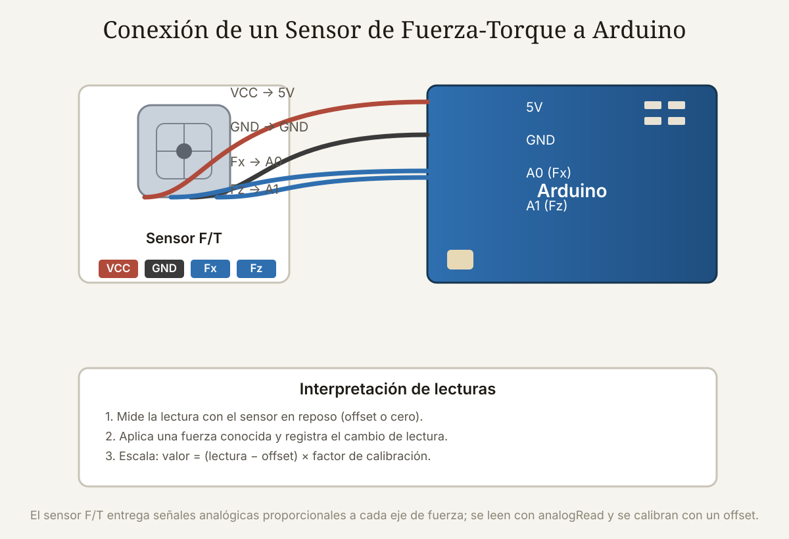

Qué cubre esta guía
Los 6 ejes de medición
Un sensor de fuerza-torque de 6 ejes mide simultáneamente:
| Tipo | Componente | Significado |
|---|---|---|
| Fuerza | Fx | Empuje en el eje X |
| Fuerza | Fy | Empuje en el eje Y |
| Fuerza | Fz | Empuje en el eje Z (presión) |
| Torque | Mx | Giro alrededor del eje X |
| Torque | My | Giro alrededor del eje Y |
| Torque | Mz | Giro alrededor del eje Z |
Con estos seis valores, el robot sabe exactamente qué fuerza aplica y qué par soporta en cualquier dirección: es lo que permite insertar una pieza con la presión justa, pulir con fuerza constante o frenar ante una colisión.
Galgas extensométricas y puente de Wheatstone
Una galga extensométrica (strain gauge) es una resistencia que cambia su valor cuando el material sobre el que está pegada se deforma: se estira, y la resistencia sube; se comprime, y baja. Midiendo ese cambio con un puente de Wheatstone, se determina la deformación y, conociendo la geometría y el material, se calcula la fuerza.
- Señal muy pequeña: las galgas entregan milivoltios, por lo que requieren un amplificador de instrumentación.
- Varias galgas: un sensor de 6 ejes integra galgas dispuestas estratégicamente para separar las seis componentes de fuerza y torque.
- Compensación: los puentes compensan temperatura y derivas para entregar lecturas estables.
Montaje en la muñeca del robot
El sensor se monta en la muñeca, entre el último eslabón del brazo y el efector. Esa posición es ideal porque es el punto más cercano a la interacción con el entorno: todo lo que el robot toca pasa a través de la muñeca, y las masas de los eslabones anteriores no interfieren en la medición.
Lectura analógica con Arduino
La señal de las galgas debe amplificarse antes de llegar al ADC. El módulo HX711 (para celdas de carga) o un amplificador de instrumentación hacen ese trabajo. Luego, cada canal se lee con analogRead():
// Lectura de un canal de fuerza con HX711 (celda de carga)
#include <HX711.h>
const int PIN_DT = 3; // datos
const int PIN_SCK = 2; // reloj
HX711 sensor;
void setup() {
Serial.begin(115200);
sensor.begin(PIN_DT, PIN_SCK);
// Tare: captura el offset en reposo
sensor.tare();
}
void loop() {
// Lee el peso/fuerza ya compensado por el tare
float valor = sensor.get_units(10); // promedio de 10 lecturas
Serial.println(valor);
delay(200);
}Para un sensor de 6 ejes profesional, la lectura suele llegar por un bus serie (similar a los servos inteligentes), pero el principio de amplificar, leer y calibrar es el mismo.
Calibración con offset
- Captura el offset: lee el sensor en reposo y registra ese valor como el "cero".
- Aplica fuerzas conocidas: cuelga pesos conocidos o aplica fuerzas de referencia y registra la lectura.
- Calcula el factor de escala: divide la fuerza real por el cambio de lectura para obtener la relación unidad/lectura.
- Convierte: fuerza = (lectura − offset) × factor.
La calibración convierte una lectura cruda del ADC en una fuerza con unidades reales. Sin ella, el sensor solo entrega números sin significado físico.
Aplicaciones: ensamblaje, pulido y seguridad
- Ensamblaje e inserción: insertar una pieza con la presión justa, detectando cuándo encaja, sin dañar los componentes.
- Pulido y lijado: mantener una presión constante sobre la superficie a pesar de sus irregularidades.
- Seguridad: detectar una colisión o fuerza anormal al instante y detener el robot, protegiendo a las personas y al propio equipo.
Problemas comunes y soluciones
| Síntoma | Causa probable | Solución |
|---|---|---|
| Lecturas que no cambian | Sin amplificación o cable roto | Verificar el amplificador y la continuidad de la galga |
| Lecturas ruidosas | Fuente ruidosa o cables largos | Fuente estable, cables cortos y promedio de lecturas |
| Deriva con el tiempo | Cambio de temperatura | Compensación térmica y re-tare periódico |
| Valor de fuerza sin sentido | Falta de calibración | Aplicar pesos conocidos y calcular el factor |
| El sensor no vuelve a cero | Deformación permanente o montaje flojo | Revisar el montaje y re-tarear |
Conclusión
El sensor de fuerza-torque le da al brazo robótico el sentido del tacto: mide las seis componentes de fuerza y torque en la muñeca, habilita el ensamblaje delicado y la seguridad por detección de contacto. Es el complemento final del lazo de control que empezó con los encoders y los servos inteligentes: con posición y fuerza medidas, el brazo deja de adivinar y empieza a sentir.
Preguntas frecuentes
¿Qué mide un sensor de fuerza-torque de 6 ejes?
Mide seis magnitudes simultáneamente: tres fuerzas (Fx, Fy y Fz, es decir, empujes en cada dirección del espacio) y tres torques (Mx, My y Mz, es decir, giros alrededor de cada eje). Con esos seis valores, el robot sabe exactamente qué fuerza está aplicando y qué par está soportando su muñeca en cualquier dirección. Esto es lo que permite tareas sensibles como insertar una pieza con la presión justa, pulir con fuerza constante o detectar una colisión al instante.
¿Cómo funciona una galga extensométrica?
Una galga extensométrica (strain gauge) es una resistencia que cambia su valor cuando el material sobre el que está pegada se deforma: al estirarse, la resistencia aumenta; al comprimirse, disminuye. Midiendo ese cambio con un puente de Wheatstone, se determina la deformación y, conociendo la geometría y el material, se calcula la fuerza aplicada. Un sensor de fuerza-torque integra varias galgas dispuestas estratégicamente para medir deformaciones en distintas direcciones y separar las seis componentes de fuerza y torque.
¿Dónde se monta el sensor de fuerza-torque en el brazo?
Se monta en la muñeca, entre el último eslabón del brazo y el efector (la pinza o herramienta). Esa posición es la ideal porque es el punto más cercano a la interacción con el entorno: todo lo que el robot toca pasa a través de la muñeca, por lo que el sensor capta con máxima sensibilidad las fuerzas de contacto, sin que las masas de los eslabones anteriores interfieran en la medición. Por eso los brazos colaborativos industriales llevan el sensor de fuerza-torque integrado justo ahí.
¿Cómo leo un sensor de fuerza-torque con un Arduino?
La salida de las galgas es una señal muy pequeña (milivoltios) que debe amplificarse con un amplificador de instrumentación o un módulo como el HX711 antes de llegar al ADC del Arduino. Cada canal (Fx, Fz, etc.) se lee con analogRead, y luego se calibra restando el offset (la lectura en reposo) y multiplicando por un factor de escala obtenido aplicando fuerzas conocidas. El resultado es el valor de fuerza en la unidad deseada, listo para usarse en el control del brazo.
¿Para qué sirve la medición de fuerza en un brazo robótico?
Tiene tres usos principales. Primero, el ensamblaje y la inserción de piezas con la presión justa, sin dañar los componentes. Segundo, el control de fuerza en tareas como pulido o lijado, donde se mantiene una presión constante sobre la superficie. Tercero, y más importante, la seguridad: el sensor detecta una colisión o una fuerza anormal al instante y permite detener el robot antes de que dañe a una persona o a sí mismo. Es la pieza clave que habilita la robótica colaborativa segura.
Este artículo es contenido editorial independiente: no contiene ubicaciones patrocinadas ni enlaces de afiliado. Si en futuras actualizaciones se agregan enlaces a proveedores de componentes, serán identificados explícitamente. La medición de fuerza es una capa de apoyo, no un sustituto de las medidas de seguridad de la normativa vigente. El código y las conexiones son referenciales y deben adaptarse y probarse con tu propio hardware. Si detectas un error en esta guía, por favor avísanos.
Sigue aprendiendo
Cierra el lazo de control completo repasando los Encoders de Articulación y los Servos Inteligentes, las tres piezas de un brazo robótico con precisión industrial.
Fuentes primarias y lecturas recomendadas
Referencias que sustentan los conceptos generales de la guía. Las especificaciones exactas dependen del sensor y del amplificador.
- Arduino Libraries — Librería HX711
- All About Circuits — Puente de Wheatstone
- Arduino Reference — analogRead()
Enlaces revisados: 13 de agosto de 2026.